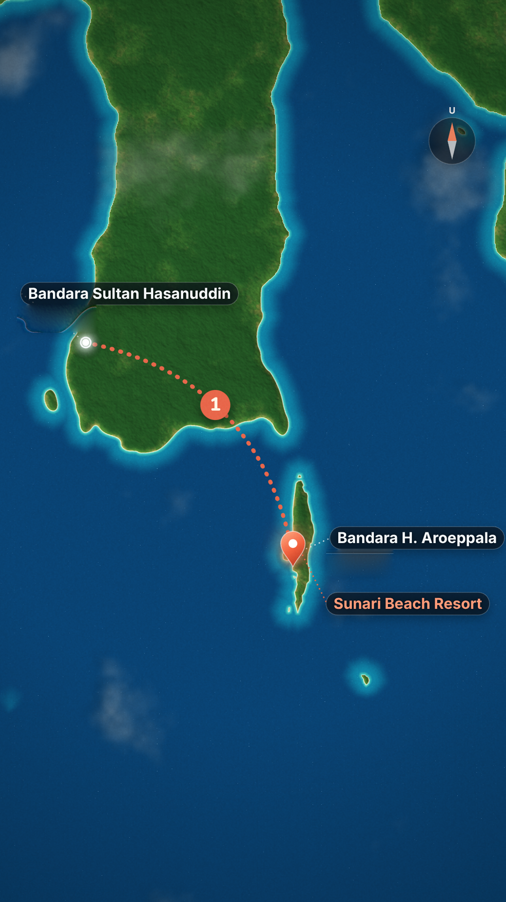
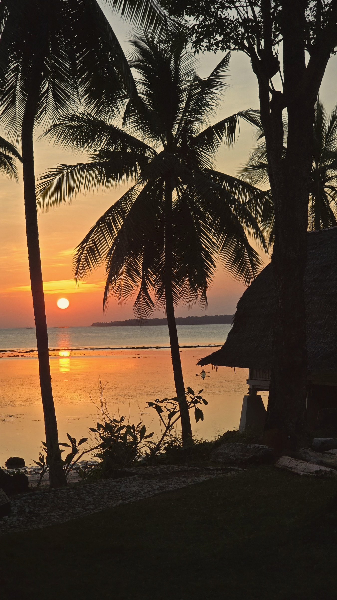

Cara ke SunaRi
Dari Jakarta
ke Pantai Sunari
Lebih dekat dari yang kamu kira
Simpan rutenya →

3 jalan menuju senja
Pilih yang paling cocok
Opsi A · Paling cepat
Udara
Pesawat → pesawat → mobil
Opsi B · Paling berkesan
Darat & feri
Pesawat → mobil → feri → mobil
Opsi C · Santai di kapal
Kapal langsung
Pesawat → KM Dharma Kartika III → mobil
Semua jalan berakhir di senja yang sama.
*Belum termasuk waktu transit & menunggu jadwal
SunaRi · Selayar#sunarisunsetmoment02 / 10

Semua opsi
Jakarta ke SunaRi± 2 jam 30 menit
Jakarta → Makassar
Pesawat ke Bandara Sultan Hasanuddin. Banyak jadwal setiap hari, dan di sinilah liburanmu dimulai.
BerangkatJakartaBandara Soekarno-Hatta
TibaMakassarBandara Sultan Hasanuddin
Durasipesawat±2 jam 30 menit
SunaRi · Selayar#sunarisunsetmoment03 / 10

Opsi A · Udara
Jakarta ke SunaRi± 45 menit
Makassar → Aroeppala
Pesawat ke Bandara H. Aroeppala. Jadwalnya terbatas, cek minimal H-7. Dari jendela, birunya Selayar sudah menyapa.
SunaRi · Selayar#sunarisunsetmoment04 / 10

Opsi B · Darat
Jakarta ke SunaRi± 4–5 jam
Makassar → Bira
Mobil atau bus dari Terminal Malengkeri. Berangkat pagi, nikmati jalan pesisir selatan Sulawesi.
SunaRi · Selayar#sunarisunsetmoment05 / 10
Opsi B · Feri
Jakarta ke SunaRi± 2 jam
Bira → Pamatata
Feri penyeberangan ke Pulau Selayar. Cek jadwal lebih dulu, angin laut jadi penyambut pertama.
SunaRi · Selayar#sunarisunsetmoment06 / 10

Opsi C · Kapal
Jakarta ke SunaRi± 10–11 jam
Makassar → Benteng
KM Dharma Kartika III, tanpa ganti feri. Berangkat malam, tidak setiap hari. Tidur di kapal, bangun sudah di Selayar.
SunaRi · Selayar#sunarisunsetmoment07 / 10

Langkah terakhir
Jakarta ke SunaRi · naik mobil
Selangkah lagi ke SunaRi
Bandara H. Aroeppaladari Opsi A±10–15 menit
Pelabuhan Pamatatadari Opsi B±1–1,5 jam
Pelabuhan Bentengdari Opsi C±20–30 menit
Biar kami yang menjemput (berbayar). Kabari jadwal tibamu lewat WhatsApp.
SunaRi · Selayar#sunarisunsetmoment08 / 10

Jakarta ke SunaRiSore
Lalu senja menyambut
Sore itu saya sadar, perjalanan jauh ke Selayar terbayar lunas hanya dalam lima belas menit senja.
SunaRi · Selayar#sunarisunsetmoment09 / 10

Bekal sebelum berangkat
Biar perjalanan tenang
Pesan tiket pesawat & feri lebih awal, apalagi saat libur panjang
Siapkan uang tunai secukupnya untuk di perjalanan
Kabari jadwal tibamu, biar kami siapkan penjemputan
Simpan lokasi SunaRi di Google Maps
Bingung atur jadwalnya? Biar kami bantu.
Simpan & tag teman perjalananmu
WhatsApp 0821-8903-3044
Pantai Sunari · Selayar
#sunarisunsetmoment